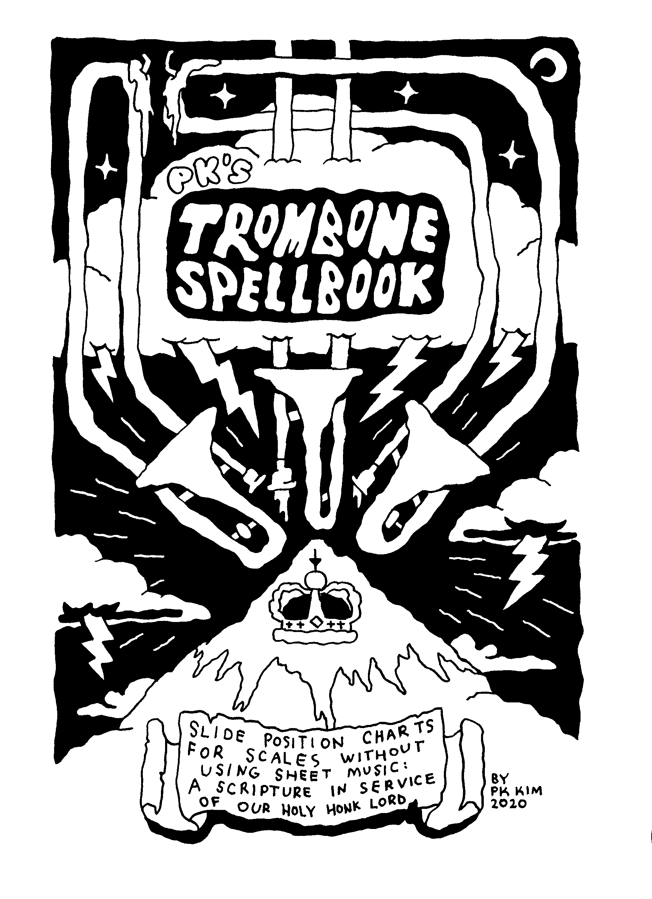

JUMP

JUMP is a very tiny comic about a skatebird jumping real high. Despite its tiny size (inspired by lianhuanhua), this experimental comic is packed full of 28ish pages of weird nonsense, fight scenes, and trippy colors.

BUY PHYSICAL COPY ($5+)*
DIGITAL DOWNLOAD (name your price)
---
WRESSLEBOYS

WRESSLEBOYS is a very very tiny collection of 6 boys who like to wrestle.
BUY PHYSICAL COPY ($2+)*
---
8 BONUS BOBS

8 BONUS BOBS is a very small 2-color DLC expansion pack zine of auxillery Bobs released after the completion 100 SpongeBobs.
BUY PHYSICAL COPY ($2+)*
---
TROMBONE SPELLBOOK

PK's TROMBONE SPELLBOOK is an esoteric collection of charts of numbers. Those numbers are trombone slide positions for various musical scales. A cheatsheet guide that PK made to help themself practice trombone because other similar alternative resources were not available online.
This zine is not currently available but if somehow you want to see it, e-mail me
~~~
*shipments of physical merch may be delayed due to personal circumstances [oct2020]